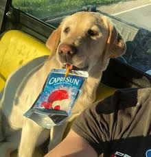

<!DOCTYPE html>
<html lang="en" ></html>
<head>
    <meta charset="UTF-8">
    <title>About</title>
    <style>
         body, h1, h3, h5, p, input, button {
            font-family: 'Segoe UI', Arial, Helvetica, sans-serif;
        }
        body {
            display: flex;
            flex-direction: column;
            align-items: center;
            justify-content: flex-start;
            min-height: 100vh;
            margin: 0;
        }
        header, section {
            width: 100%;
            display: flex;
            flex-direction: column;
            align-items: center;
        }
        .home-icon {
            position: absolute;
            top: 20px;
            left: 20px;
            text-decoration: none;
        }
        .home-icon svg {
            width: 32px;
            height: 32px;
            fill: #333;
            transition: fill 0.2s;
        }
        .home-icon:hover svg {
            fill: #0078d4;
        }
        section {
            margin-top: 20px;
        }
        img {
            display: block;
            margin: 0 auto 20px auto;
            max-width: 300px;
            width: 100%;
            height: auto;
        }
        div {
            text-align: center;
            max-width: 600px;
        }
    </style>
</head>
<body>
    <header>
        <h1>About Me</h1>
        <nav style="width: 100%; display: flex; justify-content: center; margin-bottom: 16px;">
            <ul style="list-style: none; display: flex; gap: 32px; padding: 0; margin: 0;">
            <li><a href="index.html" style="text-decoration: none; font-weight: bold; color: #333;">Home</a></li>
            <li><a href="about.html" style="text-decoration: none; font-weight: bold; color: #333;">About</a></li>
            <li><a href="new-animal-form.html" style="text-decoration: none; font-weight: bold; color: #333;">Add Animal</a></li>
            </ul>
        </nav>
    </header>
    <section>
        
        <div>
            <h2>Description</h2>
            <p>Welcome to my page! My name is Sarah Parisi (AKA Caprisun), and I'm a passionate amateur photographer and birder. 
                For me, photography is more than just capturing a moment; it's a way to connect with the world around me and share the 
                incredible beauty I discover, one bird at a time. Here, you'll find a catalog of my images and the stories behind my adventures.</p>
        </div>
    </section>
</body>
</html>